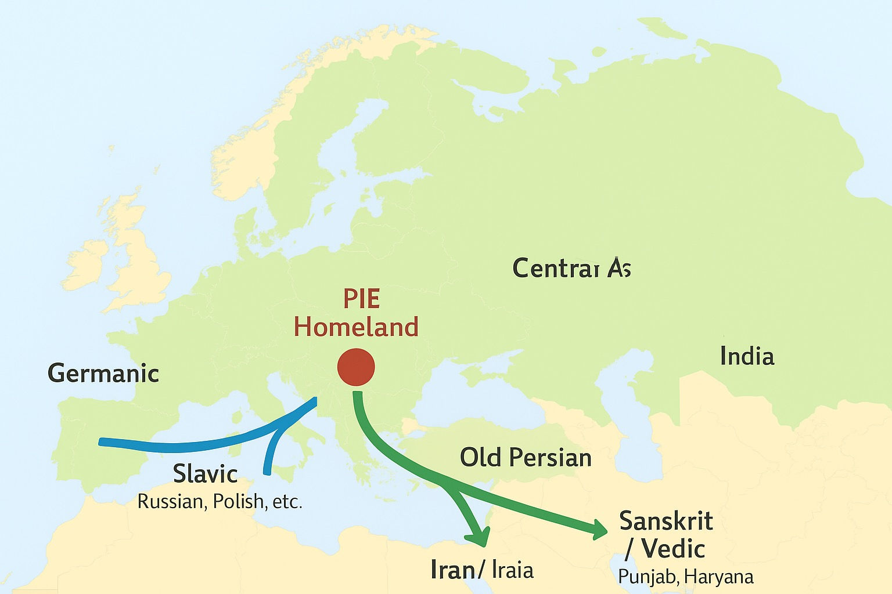

History of Vedas, Language and Role of Aryans
Vedas
The Vedas are considered the oldest scriptures of Hinduism and are regarded as apauruṣeya (अपौरुषेय) — meaning "not of human agency."
- According to Hindu belief, the Vedas are śruti (श्रुति = "that which is heard") — eternal truths revealed to ancient sages (ṛṣis) in deep meditation.
- These sages did not "compose" the Vedas in the way an author writes a book; rather, they "heard" or "realized" them and passed them down orally.
- The Vedas were transmitted orally for thousands of years before being written down much later (around 1500–500 BCE for their composition, with manuscripts appearing centuries afterward).
- Different hymns are attributed to different ṛṣis (for example, many hymns in the Rigveda are attributed to families like the Angirasas, Vasishthas, and Vishwamitras).
- The Vedic hymns are said to have been “heard” (śruti) by ṛṣis (sages/seers) in deep states of meditation. Each hymn is traditionally attributed to a particular ṛṣi or a ṛṣi-family. These attributions are preserved in the Anukramaṇīs (indexes of the Vedas).
Major Ṛṣi Families of the Rigveda
- Gṛtsamāda — credited with much of Mandala 2
- Viśvāmitra — Mandala 3
- Vāmadeva — Mandala 4
- Atri — Mandala 5
- Bharadvāja — Mandala 6
- Vasiṣṭha — Mandala 7
- Kaṇva — parts of Mandala 8
- Angirasas — parts of Mandala 9 and 10
Individual Sages
- Dīrghatamas Aucathya — important hymns in Mandala 1
- Agastya — some hymns in Mandala 1
- Lopāmudrā (female ṛṣi, wife of Agastya) — one hymn in Mandala 1
- Ghoṣā (female ṛṣi, daughter of Kakṣīvān) — two hymns in Mandala 10
Each hymn is traditionally recited with the ṛṣi (seer), chandas (meter), and devatā (deity) being named before chanting.
Example: "ṛṣiḥ viśvāmitraḥ, chandas gāyatrī, devatā agniḥ."
Āryas (Indo-Aryans)
The role of the Āryas (Indo-Aryans) who entered the northwestern part of the Indian subcontinent (around 1500 BCE, ~3,500 years ago) is central to how the Vedic culture developed.
1. Who were the Āryas?
- The term Ārya in the Vedas means noble, cultured person, not a race.
- Historically, scholars connect them with Indo-Aryan-speaking pastoral groups who migrated from Central Asia into the Indian subcontinent after the decline of the Indus Valley Civilization (IVC).
2. Their Role in the Indus Valley Region
When they arrived, the urban Harappan/Indus cities (like Mohenjo-daro, Harappa) were already in decline (~1900 BCE).
The Āryas brought:
- Sanskrit language (early Vedic Sanskrit)
- Vedic hymns (Rigveda and others) which they preserved orally
- Ritual practices centered around fire (Agni), soma, and sacrifices (yajña)
- Pastoral lifestyle (cattle, horses, chariots)
3. Interaction with the Indus People
- Archaeology suggests a mixing rather than a total replacement.
- Elements of Harappan culture (symbols, goddess worship, possibly yoga/meditation practices) blended with Vedic traditions.
- This fusion laid the foundation for later Hindu civilization.
4. Role in Vedic Compilation
- The Āryas were the lineages that preserved and systematized the Vedas.
- They arranged the oral hymns into the Rigveda Samhita, later reorganized parts into the Sama, Yajur, and Atharva Vedas.
- Their priestly families (ṛṣis, hotṛs, udgātṛs, adhvaryus) ensured the hymns were transmitted with absolute precision.
5. Timeline (simplified)
- 2600–1900 BCE → Mature Indus Valley Civilization
- 1900–1500 BCE → Decline of Harappan cities
- 1500 BCE onwards → Arrival/settlement of Indo-Aryan groups in Punjab & Haryana region
- 1500–1200 BCE → Oral composition of Rigvedic hymns
- 1200–1000 BCE → Later Vedic texts (Sama, Yajur, Atharva)
- 1000–500 BCE → Brāhmaṇas, Āraṇyakas, Upaniṣads written
Conclusion: The Āryas who came into the Indus region around 3,500 years ago were the carriers of the Vedic hymns and rituals. They preserved and compiled the Vedas, while also absorbing cultural elements of the older Indus civilization, which created the roots of Indian spiritual and cultural traditions.
Central Asia Today (modern countries)
The region is mainly made up of the "Stans":
- Kazakhstan
- Uzbekistan
- Turkmenistan
- Kyrgyzstan
- Tajikistan
Sometimes parts of Afghanistan, southern Russia (Siberia, Ural area), and western China (Xinjiang region) are included in the cultural-geographic term "Central Asia."
Language spoken in Indus Valley Civilization
1. Indus Valley Civilization (2600–1900 BCE)
- The people of Harappa and Mohenjo-daro had their own script (the Indus script) with short inscriptions.
- The script is still undeciphered, so we don't know their exact language.
- Scholars have suggested possible candidates:
- Proto-Dravidian (ancestor of Tamil, Telugu, Kannada, Malayalam)
- Munda languages (like Santali, still spoken in eastern India)
- Or a lost language family no longer spoken
2. Dravidian Hypothesis
Many linguists think the Harappans spoke a proto-Dravidian language.
Reasons:
- Place-names in North India that seem Dravidian
- Some early Sanskrit words are borrowed from Dravidian (e.g., for plants, agriculture)
- Dravidian languages are still spoken in South India (Tamil, Telugu, Kannada, Malayalam) but may once have been more widespread in the north too
3. Munda (Austroasiatic) Influence
- Another group of languages, the Munda family (related to Khmer and Vietnamese), is spoken today by tribal communities in eastern/central India.
- Vedic Sanskrit contains a few loanwords that may come from Munda.
- This shows the Indo-Aryans interacted with Munda speakers when they settled in India.
4. Substrate Influence on Sanskrit
- Early Vedic Sanskrit contains many non-Indo-European words, especially for agriculture, local plants, and animals. Example: tila (sesame), khalā (threshing floor), āṇi (axle-pin) → not Indo-European.
- This suggests the Indo-Aryans adopted words from local pre-Sanskrit languages (likely Dravidian or Munda).
5. Timeline of Languages in India (simplified)
- Before 1900 BCE: Harappan/Indus Valley language (possibly proto-Dravidian or something else).
- 1900–1500 BCE: Post-Harappan cultures (rural, regional languages continue).
- ~1500 BCE onwards: Indo-Aryan (Vedic Sanskrit) speakers enter and dominate in the north.
- South India: Dravidian languages remain strong, independent of Sanskrit.
- East/Central India: Munda languages survive among tribal groups.
So scientifically: Before Sanskrit came, India was multilingual, with likely Proto-Dravidian, Munda, and other lost languages. The Indo-Aryans brought Vedic Sanskrit, which mixed with these older languages, creating the foundation for later Indian culture and languages.
Is Telugu a Dravidian language?
1. Language Families vs. Borrowed Vocabulary
- Language family is decided by grammar, structure, and core vocabulary, not by how many loanwords it has.
- Example: English has ~60% words from Latin/French, but it's still a Germanic language (because of its grammar and older core words like eat, drink, house, sun, moon).
2. Core Dravidian Features in Telugu
Grammar:
- Verb-final sentence order (Subject–Object–Verb)
- Use of agglutination (adding suffixes for case, tense, person, etc.)
- Example: ill-u (house), illu-lō (in the house), illu-lō-nuṇḍi (from the house)
Pronouns: Telugu pronouns (nēnu = I, mēmu = we) are Dravidian in origin.
Basic vocabulary: Words like akka (elder sister), talli (mother), maguva (girl) are Dravidian, not Sanskrit.
Summary: Telugu is a Dravidian language because its structure, grammar, and core words are Dravidian. It only borrowed Sanskrit vocabulary due to cultural influence — just like English borrowed from Latin/French.
Sanskrit Language and its usage by Indo-Aryan-speaking migrants
Early Vedic Sanskrit belongs to the Indo-European language family (same big family as Greek, Latin, Persian, etc.). Linguists see close links between Sanskrit and ancient languages like Avestan (old Iranian) and Hittite (Anatolia).
This suggests that the roots of Sanskrit came from outside India (Central Asia steppes).
Scholars think the core hymns of the Rigveda were composed by Indo-Aryan-speaking groups who migrated into northwest India around 1500 BCE.
These hymns were preserved orally by priestly families.
Over time, they absorbed local cultural/religious elements from the declining Indus Valley Civilization.
So the language + core hymns came with Indo-Aryans from outside, but the full Vedic culture as we know it was shaped in India through mixing with local traditions.
Scientific Evidence
1. Language Evidence (Linguistics)
Sanskrit is part of the Indo-European language family, which includes Greek, Latin, Celtic, Slavic, Persian, and many more.
Example:
• Sanskrit: mātṛ (mother), pitṛ (father), nava (nine), aśva (horse)
• Latin: mater, pater, novem, equus
• Old Persian: mātar, pitar, nava, aspa
This shows Sanskrit has a common ancestor with these languages, called Proto-Indo-European (PIE), spoken ~4000–2500 BCE somewhere in Eurasia. So Sanskrit did not originate independently in India, but came from this larger family.
2. Archaeological & Genetic Evidence
- The Indus Valley Civilization (IVC) (2600–1900 BCE) had a different language (not Sanskrit; undeciphered script).
- After IVC declined, Indo-Aryan–speaking pastoral groups (carrying horses, chariots, and steppe ancestry) entered northwestern India ~1500 BCE.
- Genetics (recent DNA studies): Ancient DNA from Central Asia (Andronovo, Sintashta cultures) shows strong links with early Indo-Aryans.
- Modern North Indians have a genetic mix: older Harappan ancestry + Steppe pastoralist ancestry.
This fits the idea that Indo-Aryans migrated and mingled with local populations.
3. Texts (The Vedas)
- The Rigveda (oldest Veda) reflects a pastoral, semi-nomadic society — worship of fire (Agni), gods of sky and thunder (Indra), and use of horses and chariots.
- These match Central Asian cultures (Sintashta/Andronovo) known for chariots and horse rituals.
- The hymns were composed in early Vedic Sanskrit after these groups settled in Punjab.
✅ Scientific Conclusion
• Sanskrit came to India with Indo-Aryan-speaking migrants from Central Asia around 1500 BCE.
• The Vedas were composed by these Indo-Aryan priestly families after settling in northwest India.
• The Vedic culture is thus a blend: Indo-Aryan language + rituals mixed with local traditions of the Indus Valley.
Impact of Vedas in South-East Asia
The impact of the Vedas and the broader Vedic-Hindu tradition was very strong, both across India and far beyond it into Southeast Asia.
🌏 1. Within India
- The Vedas themselves were preserved mainly in northern India (Punjab, Haryana, Uttar Pradesh, Bihar) where the Indo-Aryans first settled.
- Over centuries (1000–500 BCE), Vedic culture spread eastward (towards Bengal) and southward into the Deccan.
- Later, Sanskrit became the language of high culture throughout India, influencing even Dravidian regions.
🌏 2. Spread Beyond India (Southeast Asia)
From about 200 BCE to 1200 CE, Indian traders, priests, and kings carried Vedic/Hindu culture abroad:
- Indonesia (Java, Bali): Sanskrit inscriptions from the 5th century CE. Even today, Bali practices a form of Hinduism that traces back to Vedic traditions.
- Cambodia: The great temples of Angkor Wat (12th century) are dedicated to Vishnu, reflecting Vedic influence.
- Thailand: The Thai version of the Ramayana is called Ramakien. Thai kings take the title Rama (from Ayodhya).
🌏 3. How Did It Spread?
- Trade: Indian merchants sailed to Southeast Asia for spices and gold, carrying culture with them.
- Religion: Brahmin priests introduced rituals, Sanskrit learning, and Vedic-based kingship.
- Epics & Puranas: Stories from Ramayana and Mahabharata spread widely.
🌏 4. The Core Idea
- The Vedas were not directly exported word-for-word to every region. Instead:
- The Vedic worldview, Sanskrit language, and ritual system spread through cultural exchange.
- Over time, they blended with local traditions, creating unique Hindu–Buddhist cultures across Asia.
Why Sanskrit script is different from other European languages?
Sanskrit's script is different because writing developed locally in India much later, long after the language had already split from its Indo-European relatives.
1. Language vs. Script
- Language = how people speak and structure words (grammar, vocabulary, sounds)
- Script = how language is written down (letters, symbols)
- The Indo-European language family includes Sanskrit, Latin, Greek, Persian, and many modern languages
- These languages diverged thousands of years ago as spoken languages — well before writing was invented
2. When Sanskrit Was First Written
- Sanskrit existed as a fully spoken language for centuries (~1500–500 BCE) before any writing system was applied.
- The Vedas were transmitted orally for over a thousand years.
- The Brahmi script (~3rd century BCE) was the first widely used script in India to write Sanskrit.
- Later scripts (Devanagari, Grantha, Sharada, etc.) evolved locally to write Sanskrit.
3. Why Different from European Scripts
- European languages (Latin, Greek, Cyrillic) used alphabetic scripts that evolved in the Mediterranean and Near East.
- Sanskrit used abugida or syllabic scripts:
- Each character represents a consonant + inherent vowel.
- Vowels can be modified with diacritics.
- The sound system of Sanskrit (lots of consonants, retroflex sounds, aspirated consonants) required a more precise writing system than a simple alphabet.
- Devanagari, the standard Sanskrit script today, is designed to match the sounds of Sanskrit exactly, unlike Latin letters.
- Sanskrit scripts emphasize phonetic accuracy, ensuring that spoken and written forms align closely.
- The structure of Sanskrit grammar (Panini's system) influenced the design of its writing systems, making them highly systematic.
4. Timeline
- 1500–500 BCE: Sanskrit spoken, Vedas preserved orally
- ~3rd century BCE: Brahmi script in India — first inscriptions
- 7th–10th century CE: Devanagari begins to be used systematically for Sanskrit
- Today: Sanskrit is written in Devanagari, Grantha, Kannada, Tamil, and other scripts depending on region
✅ Summary
• Sanskrit comes from the Indo-European family, but its writing system developed locally in India, long after the language itself.
• Its script (Devanagari or others) reflects the need to capture Sanskrit's precise sounds, which are different from the sounds in Latin, Greek, or other European languages.
• So the difference is not in the language origin, but in how the language was written down later.
Indus Valley = Dravidians
1. Why People Say “Indus Valley = Dravidians”
- Some linguists suggest the Harappan/Indus language was a proto-Dravidian language.
- Evidence: Certain words in Tamil and other Dravidian languages seem related to reconstructed Harappan words.
- Place-names in South India may preserve old Dravidian terms.
- Later Dravidian-speaking populations (Tamil, Telugu, Kannada, Malayalam) survived mostly in southern India, while the north was later dominated by Indo-Aryans.
- So, calling them “proto-Dravidian” is a plausible hypothesis.
2. Why It’s Not Certain
- The Indus script is undeciphered — we don’t know the language for sure.
- Some scholars propose the Indus language could have been:
- Proto-Dravidian
- Munda or Austroasiatic-related
- Or a lost language family not related to either.
- Archaeology shows a very advanced urban culture, but urban features alone don’t tell us the language.
3. Genetic Evidence
- Ancient DNA shows the Indus Valley people were largely of local South Asian ancestry, with some West Asian influence.
- Modern Dravidian speakers share some genetic continuity with Indus populations, especially in South India.
- But we can’t say all Indus people were Dravidian speakers, just that some linguistic and genetic connections exist.
✅ Summary
• Calling Indus Valley people Dravidians is a reasonable hypothesis, especially for southern continuity.
• But scientifically, it’s not certain — we only have clues from language reconstruction, archaeology, and genetics.
Proto-Indo-European Homeland
- Around 4000–2500 BCE, people speaking Proto-Indo-European lived in the steppes of southern Russia, Kazakhstan, and Ukraine.
- Some groups moved west into Europe, where their languages became Greek, Latin, Germanic, and Slavic.
- Others moved south into Iran and India, where their languages became Old Persian and Sanskrit.
- On a map, this shows Europe on the left, Central Asia at the top, and India at the bottom right, with the Indus and Sarasvati rivers marked.

❖ ❖ ❖
This document explores the rich history of the Vedas, the migration of Indo-Aryan peoples, and the linguistic heritage that shaped ancient Indian civilization.